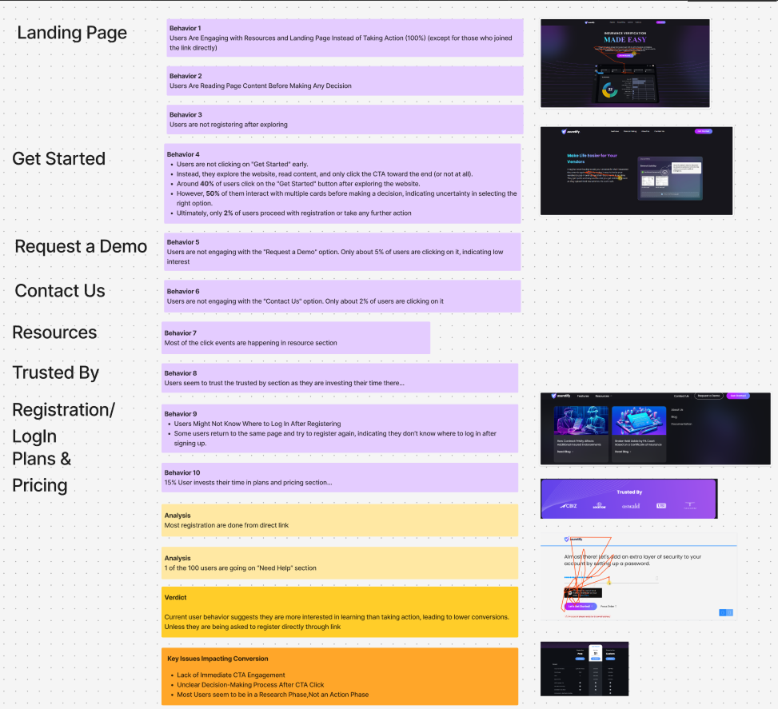
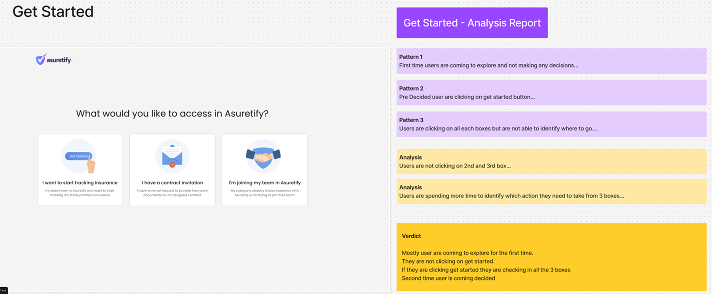
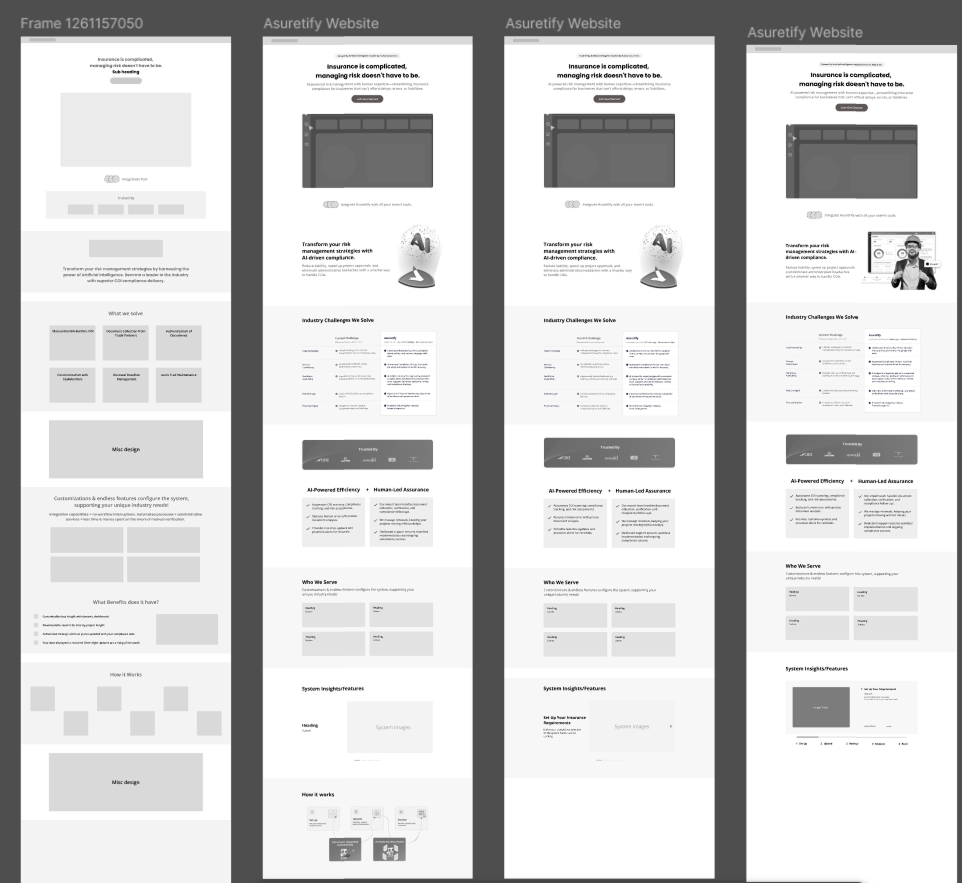
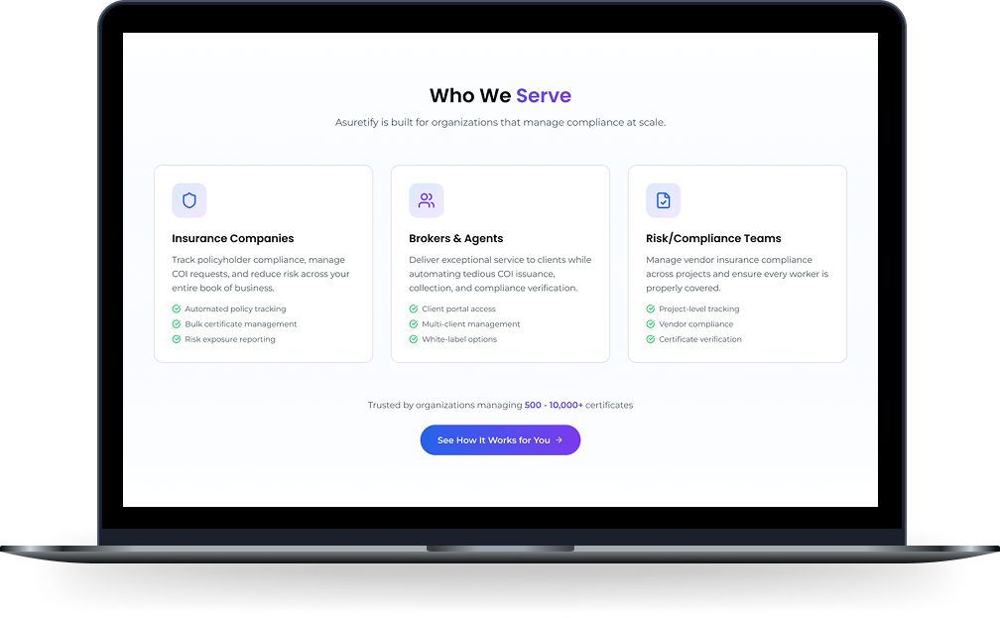
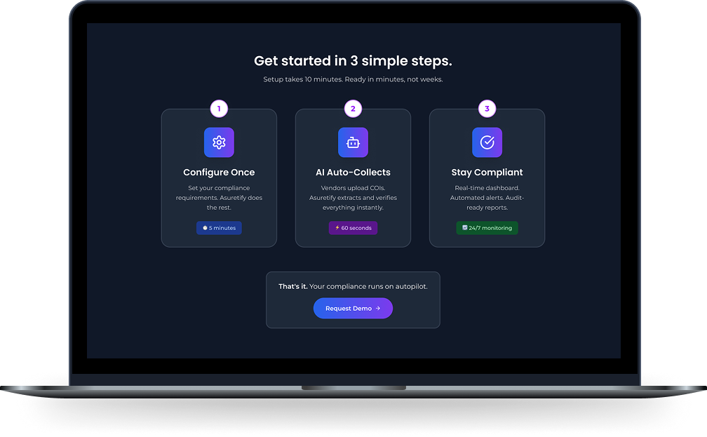
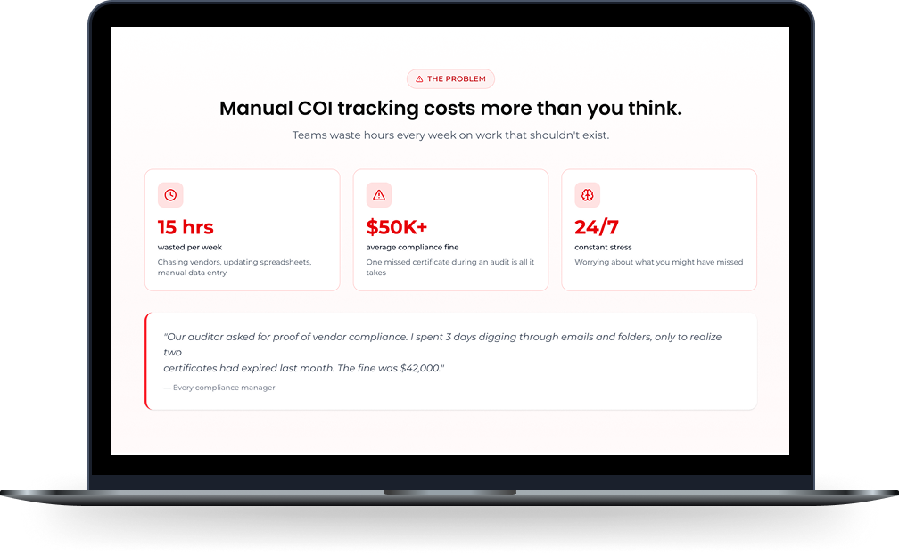
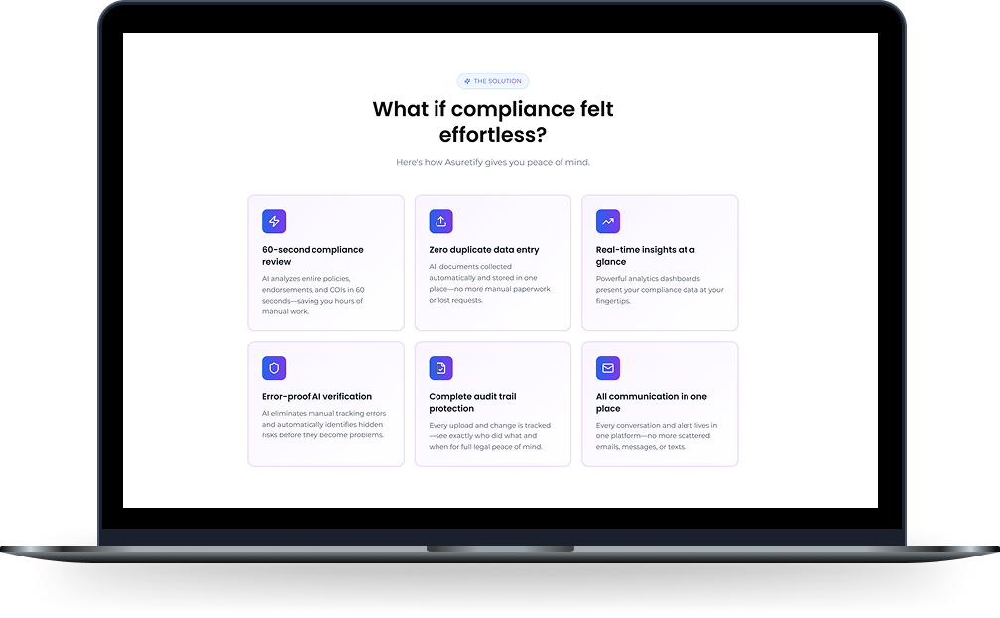

"The traffic was fine. The clarity wasn't."
Asuretify is an insurance compliance platform. The traffic numbers were healthy. Users were finding the product, exploring it, spending time with it. And then they were leaving without registering.
No error messages. No rage clicks. No obvious friction. Just a pattern of quiet exits from a product people seemed genuinely interested in.
The first instinct was to assume the value proposition wasn't landing, maybe better copy, a stronger hero, a cleaner visual. But the data suggested something more specific was happening.
The most important thing I did in the first week was not form hypotheses. I opened Hotjar, filtered for sessions longer than 30 seconds, and watched. Not for rage clicks or scroll depth, just for behavior. What did people linger on? Where did their mouse pause?


These artifacts capture the recurring patterns observed across more than 100 user sessions and became the foundation for the redesign strategy.
The issue wasn't trust, pricing, or usability. Users were evaluating risk. Before registering, they wanted to understand who the platform was for and what would happen after signup.
Once the root cause became clear, the redesign was no longer about visual improvements. It was about reducing uncertainty, clarifying audience fit, and helping users understand what happens after they engage with the platform.
The redesign focused on three outcomes: helping users identify whether the platform was relevant to them, reducing uncertainty around onboarding, and making the next step feel predictable before asking for commitment.
The existing page was organized around what Asuretify could do. But users were asking a different question, not "what does this platform offer?" but "what happens to me specifically, right after I click register?"
That question was never answered. The site moved from features to pricing to CTA without ever describing the onboarding experience. Every returning visit to the pricing page was a user trying to find that answer and not finding it.

Every major design decision was connected directly to a research finding.
Research showed users struggled to understand whether the platform was relevant to them. Dedicated audience segmentation helped users immediately identify their role.

Instead of asking users to commit immediately, the redesigned website explains the onboarding process before asking for action.

The redesign reframed the conversation around business pain points before introducing platform capabilities.

Rather than listing capabilities, the redesign focused on outcomes users care about: speed, visibility, compliance, and confidence.
